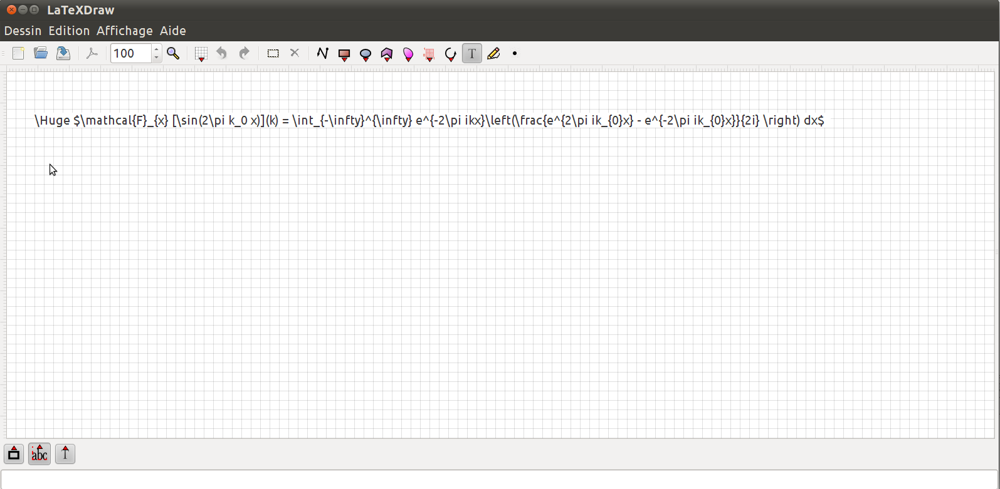

|
|

LaTeXDraw is a graphical drawing editor for LaTeX. LaTeXDraw can be used to 1) generate PSTricks code; 2) directly create PDF or PS pictures. LaTeXDraw is developped in Java and thus runs on top of Linux, Windows, and Mac OS X. It's available in English, in Spanish, in French and in German. You need jre 1.6 to launch LaTeXDraw.
News:
More than one year without any release and post... Shame on me. LaTeXDraw 3.0 in on the road and a first beta should be released before the end of this year. This release takes a lot of time because I am completely rewritting LaTeXDraw: the code of 2.0 is really awful and I wanted to integrate the results of my PhD into LaTeXDraw in order to improve this last.
The most important feature of LaTeXDraw 3.0 will be the native support of LaTeX text. It means that you will be able to write LaTeX text as in your favourite LaTeX editor. The text will be rendered in LaTeXDraw as in your final pdf or ps document. For example, in the following screen-shot I added a text in the drawing and typed a formula.

Once typed, the text is compiled in LaTeX to be rendered in LaTeXDraw:

This idea is strongly inspired by Lyx ;). Of course, if you want to use LaTeX commands coming from various packages, you can add \usepackage{} commands as it is already possible in LaTeXDraw 2.0.
You can also discover in the screen-shots others new features; but I will speak about them in next posts soon.
This release fixes some issues, notably a problem occuring while exporting as pdf (again...) using pdfcrop. This release is close to the 2.0.7 release because of the Debian feature freeze that will occur soon.
This release fixes the issue that did not allow the export as pdf documents on Windows. By the way on Windows, to export as pdf using pdfcrop you need a perl interpreter installed such as strawberryperl (http://strawberryperl.com/).
About the problem concerning a text that contains special characters (for instance &), latexdraw will not escape these characters for two simple reasons: 1) a text shape in latexdraw must be formatted in latex since latexdraw is not an interface to latex as lyx. 2) If we escape special characters, how will we be able to use these special characters, for instance to create a tabular?
We thank the anonymous donator for its donation!
This release fixes some problems. It also allows to export a drawing using pdflatex and pdfcrop; this feature allows to crop the generated pdf document.
This release fixes some problems related to the pdf export: freezes occured on XP/Vista while exporting, weird pdf/ps title, etc.). It also brings the Polish localisation; thanks Szemek for that!
Finally! latexdraw 2.0.3 is just released and brings a great (in my opinion) feature: the ability to export a drawing as pdf and ps using your latex distribution. To sum up, a latex document, containing your drawing, is created and compiled into a pdf or a ps document. You can then insert it into your main latex document as a picture (pstricks packages are no more needed and the pdflatex command can be used). See here for explanations.
This release also fixes some problems (see here for more information) and the Italian localisation is now available!
I would like to thank Frank Petitjean and Martin Schonger for their donations to the latexdraw project. It is always a motivation to receive messages like 'thank for your editor, it helps me' or donations (even very small donations).
Everyone can make a donation using paypal:  or by sending a cheque (ask the address by mail) if you are french. or by sending a cheque (ask the address by mail) if you are french.
If you speak Spanish, Italian, German, Japanese, and so on, you can help to translate latexdraw in your language. Such help can be a correction of a translated string or the translation of untranslated strings.
The process is simple: to make translations you just need to create an account on launchpad and to set your language(s). Then you can translate latexdraw (and any program which is on lauchpad such as Ubuntu, Gnome,...). See launchpad. If you find that a translation is not correct, you can modify it too.
2.0 is now released, but certainly the most important release (for me) will be the 2.1. This future version will complete the work began in 2.0, such as the rewrite of the graphical library and of the undo/redo manager. Almost all of the original code has been rewritten in order the have a stout framework to easily implement more PSTricks and graphical stuffs. Because of that, the final user will see only minor changes. But after 2.1, 2.2 will return to provide PSTricks, LaTeX and graphical features such as maybe the pgf export, and some requested features.
The stable release of the 2.0 series is now release. It fixes some problem from the last beta version. Feel free to report any problem you find.
Look at the release note for more details. The more important things are certainly the use of the SVG format as the default format, the alignement and distribution of figures.
To facilitate the translation of latexdraw, we test since a month the translation platform of launchpad. Thanks to it, everone can easily translate the program without any pressure of us :p. To make translations you just need to
create an account one launchpad and to set your language(s). Then you can translate latexdraw and any program which is
on lauchpad (Ubuntu, Gnome, ...). See launchpad. If you find that a translation is not correct, you can modify it too.
The third and last beta version of 2.0 is released. It fixes a lot of bugs but problems with arrows need to be fixed.
But this version is not yet stable, so you should make copy of your drawings before using it. And feel free to report any problem you find.
Look at the release note for more details. The new strings are ready to be translated and it can be done on launchpad.
The next release will be the final 2.0 that will be released in a month.
The second beta version of 2.0 is released. It fixes some bugs but a lot still need to be fixed.
Another great stuff is that the German translation is available for test.
But this version is not yet stable, so you should make copy of your drawings before using it. And feel free to report any problem you find.
Look at the release note for more details. The translations are not yet ready.
You can make a donation to the LaTeXDraw project here:
if you want to support its development.
Screenshot:
The LaTeXDraw 1.6, 1.7,
1.8, 1.9, 1.9.*, 2.0 pages.
The 3.0 Roadmap
|
Contact:
|
{kind=link}